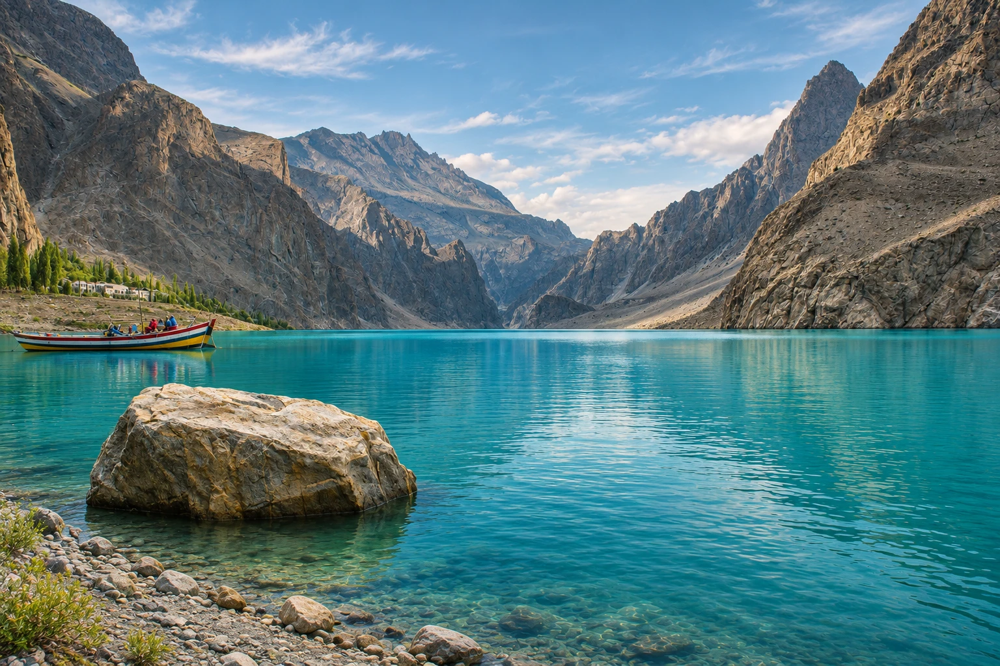
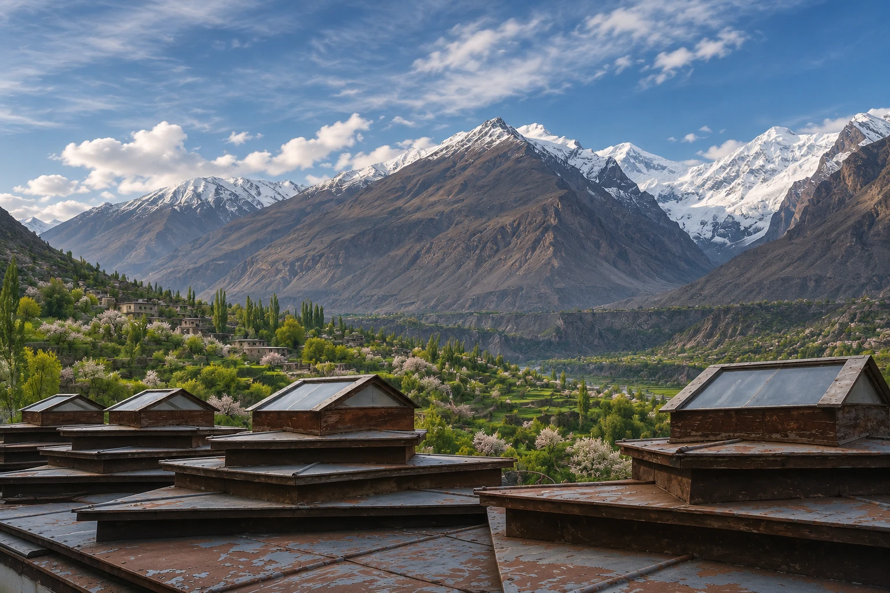

Find a quieter shore.
Trade a full schedule for a little stillness beside the water in Hunza.
Lakeside moments / Attabad
Beyond the familiar, there’s a Pakistan
you’ll carry with you long after you leave.
Raah means “way.” This is a little invitation to find yours through Pakistan’s mountain valleys, living cities, and quiet corners.
Some journeys are about how far you go.
The good ones are about how much you notice.
A familiar street. An unfamiliar valley.
A moment you wish would last a little longer.

Begin with a place that catches your eye. Leave room for the view, the people, and the unexpected turn along the way.
Find your first place →+ Save a place to your shortlist. AI-generated destination interpretations · About the imagery →
Start with a little inspiration. Leave space for the unexpected. These are sample journeys to make your own.
Tap a stop to trace your route.
Inspiration only. Travel time and access depend on your transport, weather, and dates.
Shape your own journey →You don’t need to do everything.
Just find the things that make you feel here.
Trade a full schedule for a little stillness beside the water in Hunza.
Lakeside moments / AttabadTake your time with Lahore’s architecture, courtyards, and layers of history.
City & culture / LahoreMake room for Islamabad’s open spaces and the Margalla Hills on the horizon.
An unhurried start / IslamabadThe best part of a journey is rarely the part you planned. Raah is a travel inspiration concept built around seeing more by slowing down.
Explore thoughtfully. Respect the people who call a place home. Keep the landscape as beautiful as you found it.
Small thoughts for a more thoughtful journey.
A few practical starting points.
Leave the finer details for your own plans.
This is a travel inspiration website. It does not sell tours or make reservations. Use the planner to create a private shortlist, then arrange transport and stays with the providers you choose.
The destination visuals are AI-generated interpretations based on reference photographs of the named places in Pakistan. They are illustrative, not documentary photographs. Source references and licenses are listed under Image credits. The airplane is a live, three-dimensional model.
Absolutely. They are suggested sequences, not fixed packages or confirmed transport services. Allow for your interests, driving distances, road access, and rest days.
Confirm conditions with your chosen transport provider and local authorities before you leave. For regional destination information, visit the official Gilgit-Baltistan tourism portal →.
Move your cursor around the hero and the plane follows a curved flight path. Click or tap for a flyby. Use “clear sky” to reset the smoke, or pause flight with the control at the top. Reduced-motion preferences are respected.
A starting point, a little time, and a reason to go.
Make a private travel outline to take with you.